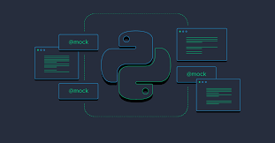

Cloud Computing
Seorang profesional di bidang cloud computing bertanggung jawab atas infrastruktur komputasi awan. Mereka merancang, mengelola, dan mengoptimalkan lingkungan komputasi awan untuk memastikan efisiensi dan keamanan. Tugas mereka termasuk desain dan implementasi solusi awan, manajemen infrastruktur, keamanan data, optimalisasi kinerja, dan pengelolaan biaya. Integrasi aplikasi dan rencana pemulihan bencana juga merupakan tanggung jawab mereka. Kolaborasi dengan tim IT dan pemangku kepentingan lainnya penting untuk memahami kebutuhan bisnis. Selain itu, pembaruan pengetahuan tentang perkembangan teknologi cloud adalah hal yang sangat penting. Dengan keterampilan yang tepat, mereka membantu perusahaan memanfaatkan cloud untuk meningkatkan efisiensi dan daya saing mereka.
GCP (Google Cloud Platform)
Google Cloud Platform (GCP) adalah sebuah platform cloud computing yang menyediakan infrastruktur, layanan, dan alat-alat untuk mendukung pengembangan, penyimpanan data, dan pengelolaan aplikasi di cloud. GCP memiliki konsep dan komponen-komponen mirip dengan HTML dalam hal pengorganisasian dan pengelolaan sumber daya cloud. Beberapa konsep kunci di GCP mencakup:
- 1. Project: Konsep proyek di GCP setara dengan halaman web dalam HTML. Sebuah proyek adalah wadah untuk mengatur, mengelola, dan menyatukan semua sumber daya cloud yang terkait dengan suatu aplikasi atau bisnis.
- 2. Resource Hierarchy: GCP mengorganisasi sumber daya dalam hierarki yang terstruktur, mirip dengan tag HTML. Ini termasuk penggunaan proyek, folder, dan organisasi untuk mengatur dan mengelola sumber daya.
- 3. Compute Engine: Layanan ini mirip dengan tag HTML karena ini adalah tempat Anda menjalankan dan mengelola aplikasi Anda di cloud. Anda dapat menggunakan mesin virtual dan kontainer untuk menjalankan aplikasi Anda di Compute Engine.
- 4. Cloud Storage: Mirip dengan tag HTML
, Cloud Storage memungkinkan Anda menyimpan dan mengakses berkas seperti gambar, video, dan data lainnya di cloud.
- 5. BigQuery: Layanan ini serupa dengan tag HTML
dan
, karena ini memungkinkan Anda untuk mengelola dan menganalisis data dalam format tabel. - 6. Networking: Konsep jaringan di GCP memungkinkan Anda mengatur dan mengelola lalu lintas data antara berbagai sumber daya, mirip dengan cara tag HTML membuat tautan
- 7. Identity and Access Management (IAM): Ini setara dengan bagaimana HTML dapat mengatur hak akses ke halaman web. Dengan IAM di GCP, Anda dapat mengatur siapa yang memiliki izin untuk mengakses sumber daya cloud Anda.
- 8. Billing and Cost Management: Seperti HTML yang terkait dengan biaya hosting dan pengeluaran lainnya, GCP menyediakan alat untuk memantau dan mengelola biaya yang terkait dengan penggunaan sumber daya cloud.
GCP juga memungkinkan Anda untuk menulis konfigurasi dan mengelola sumber daya melalui berbagai antarmuka, termasuk antarmuka baris perintah dan konsol web. Setelah sumber daya cloud Anda diatur dan dikonfigurasi, aplikasi dan data Anda dapat diakses melalui internet menggunakan berbagai perangkat dan platform.
Web Developement
Seorang web developer adalah seorang profesional yang bertanggung jawab untuk mengembangkan sisi server atau bagian belakang dari sebuah website atau aplikasi web. Mereka berfokus pada pengembangan fitur dan fungsi yang tidak dapat dilihat oleh pengguna akhir, seperti manajemen database, integrasi dengan sistem lain, dan pemrosesan data.
Seorang web developer biasanya menggunakan bahasa pemrograman seperti PHP, Java, Ruby, dan Python untuk mengembangkan aplikasi web dan fitur yang berkaitan dengan sisi server. Mereka juga menggunakan framework dan teknologi yang sesuai untuk mempercepat pengembangan dan meningkatkan fungsionalitas aplikasi web.
Tugas utama seorang web developer meliputi:
- 1. Pengembangan Aplikasi Web: Mereka merancang dan mengembangkan aplikasi web dari awal, termasuk perencanaan antarmuka pengguna, pengkodean, dan pengujian.
- 2. Manajemen Database: Memastikan data tersimpan dan diakses dengan efisien melalui manajemen database.
- 3. Integrasi dengan Sistem Lain: Mengintegrasikan aplikasi web dengan sistem dan layanan eksternal, seperti API, untuk memperluas fungsionalitas.
- 4. Keamanan: Menjaga keamanan data pengguna dan aplikasi dari ancaman keamanan, seperti peretasan atau serangan DDoS.
Web developer juga harus berkolaborasi dengan tim pengembangan lainnya, termasuk desainer UI/UX, QA (Quality Assurance), dan pengembang front-end, untuk memastikan bahwa aplikasi web yang mereka kembangkan sesuai dengan tujuan dan persyaratan bisnis serta mengikuti standar pengembangan yang baik.
CSS (Cascading Style Sheets)

CSS (Cascading Style Sheets) adalah bahasa stylesheet yang digunakan untuk mengontrol tampilan dan tata letak dari dokumen HTML dan XML. Dengan CSS, Anda dapat mengubah warna teks, font, margin, padding, posisi, dan banyak lagi dalam dokumen HTML dan XML. CSS menggunakan aturan-aturan untuk menghubungkan elemen HTML atau XML dengan gaya tertentu. Aturan CSS terdiri dari selektor dan deklarasi. Selektor adalah bagian dari aturan CSS yang menentukan elemen HTML atau XML mana yang akan diberikan gaya. Deklarasi terdiri dari sifat dan nilai. Sifat adalah aspek yang akan diubah dalam elemen HTML atau XML, seperti warna teks atau margin, sedangkan nilai adalah nilai yang diberikan pada sifat tersebut.
JavaScript

JavaScript adalah bahasa pemrograman tingkat tinggi yang digunakan untuk mengembangkan aplikasi web interaktif. JavaScript dapat digunakan untuk menambahkan interaksi dan fungsi ke halaman web seperti validasi form, animasi, efek transisi, dan manipulasi DOM. JavaScript dapat dijalankan pada browser web atau pada server menggunakan platform seperti Node.js. Saat dijalankan di browser, JavaScript dapat diintegrasikan dengan HTML dan CSS untuk membuat tampilan dan interaksi yang dinamis pada halaman web.
PHP

PHP adalah singkatan dari "Hypertext Preprocessor", yang merupakan bahasa pemrograman yang biasanya digunakan untuk membuat situs web dinamis. PHP sering digunakan bersama dengan MySQL atau database lain untuk membuat aplikasi web yang kompleks.
PHP adalah bahasa pemrograman server-side, yang berarti bahwa kode PHP dijalankan pada server web dan hasilnya kemudian dikirimkan ke browser pengguna sebagai halaman web. PHP adalah bahasa yang mudah dipelajari dan digunakan karena sintaksnya mirip dengan bahasa pemrograman lain seperti C dan Perl.
Beberapa fitur PHP meliputi:- Kemampuan untuk memproses data formulir yang dikirimkan oleh pengguna.
- Kemampuan untuk mengakses file dan database pada server web.
- Kemampuan untuk menghasilkan halaman web dinamis, yang memungkinkan konten berubah-ubah tergantung pada tindakan pengguna atau variabel yang didefinisikan oleh program.
- Kemampuan untuk menghasilkan output dalam berbagai format, termasuk HTML, XML, dan JSON.
- Kemampuan untuk mengintegrasikan kode PHP dengan kode JavaScript dan HTML.
- Kemampuan untuk memanggil fungsi dan kelas yang sudah ditentukan di PHP atau di library eksternal.
PHP adalah salah satu bahasa pemrograman yang paling banyak digunakan di dunia untuk membuat situs web dinamis. PHP dapat dijalankan di berbagai sistem operasi dan platform, dan memiliki komunitas pengguna yang besar dan aktif yang dapat membantu dalam pengembangan aplikasi web.
Java

Java adalah bahasa pemrograman yang diciptakan oleh James Gosling pada tahun 1995, yang dirilis oleh Sun Microsystems dan sekarang dimiliki oleh Oracle Corporation. Java adalah bahasa pemrograman yang berorientasi objek, yang berarti bahwa semua kode Java dikemas dalam objek yang terdiri dari data dan perilaku yang terkait. Java dirancang agar mudah dipelajari dan digunakan. Kode Java ditulis dalam file teks dan dikompilasi menjadi bytecode yang dapat dijalankan pada platform manapun yang memiliki mesin virtual Java (Java Virtual Machine/JVM). JVM memungkinkan kode Java dijalankan secara independen dari sistem operasi dan perangkat keras yang digunakan. Beberapa fitur Java meliputi:
- Portabilitas: Kode Java dapat dijalankan pada berbagai platform dan sistem operasi karena program Java dikompilasi menjadi bytecode yang dapat dijalankan pada mesin virtual Java (JVM).
- Keamanan: Java memiliki model keamanan yang ketat untuk melindungi sistem dari serangan dan ancaman.
- Kelas dan objek: Java adalah bahasa pemrograman berorientasi objek yang memungkinkan pengembang untuk membagi kode ke dalam kelas dan objek untuk membuat kode lebih modular dan mudah dipelihara.
- Multithreading: Java mendukung pengembangan aplikasi multithreading, yang memungkinkan aplikasi untuk menjalankan beberapa tugas secara bersamaan.
- Jaringan: Java memiliki dukungan yang kuat untuk pengembangan aplikasi jaringan dan protokol.
- Perpustakaan kelas: Java memiliki banyak perpustakaan kelas yang siap pakai, yang memungkinkan pengembang untuk mengambil dan menggunakan kode yang sudah ada tanpa harus menulis ulang dari awal.
Java digunakan secara luas untuk mengembangkan berbagai jenis aplikasi seperti aplikasi desktop, aplikasi web, aplikasi mobile, permainan, dan banyak lagi. Java juga digunakan sebagai bahasa pemrograman utama untuk pengembangan Android, dan sangat populer dalam pengembangan perangkat lunak enterprise karena kemampuannya dalam membangun aplikasi yang kompleks dan skala besar.
Ruby

Ruby adalah bahasa pemrograman berorientasi objek yang dirancang oleh Yukihiro Matsumoto pada pertengahan tahun 1990-an. Ruby adalah bahasa yang dinamis dan reflektif, yang berarti bahwa kode Ruby dapat memanipulasi dirinya sendiri pada waktu eksekusi.
Ruby memiliki sintaks yang mirip dengan bahasa pemrograman lain seperti Perl dan Python, dan didukung oleh kerangka kerja Ruby on Rails yang populer untuk pengembangan aplikasi web.
Beberapa fitur Ruby meliputi:- Berorientasi objek: Ruby adalah bahasa pemrograman berorientasi objek, yang berarti bahwa kode Ruby dibuat dalam bentuk objek, yang terdiri dari data dan perilaku.
- Dinamis dan reflektif: Ruby adalah bahasa dinamis yang memungkinkan pengembang untuk memodifikasi kode secara dinamis pada waktu eksekusi. Ruby juga merupakan bahasa reflektif, yang memungkinkan kode Ruby memanipulasi objek yang mewakilinya.
- Sintaks yang mudah dipahami: Ruby memiliki sintaks yang mudah dipahami dan mirip dengan bahasa pemrograman lain seperti Perl dan Python. Ini memudahkan pengembang baru untuk belajar dan menggunakan Ruby.
- Garbage collection: Ruby memiliki pengumpul sampah (garbage collector) bawaan yang secara otomatis membebaskan memori yang tidak lagi digunakan oleh program.
- Kerangka kerja Ruby on Rails: Ruby on Rails adalah kerangka kerja web open source yang sangat populer untuk pengembangan aplikasi web. Kerangka kerja ini menyediakan banyak fitur untuk mempercepat pengembangan aplikasi web, seperti routing, database ORM, dan integrasi dengan front-end.
- Komunitas pengguna yang besar: Ruby memiliki komunitas pengguna yang besar dan aktif, yang membuatnya mudah untuk mendapatkan bantuan atau sumber daya ketika mengembangkan aplikasi Ruby.
Ruby digunakan secara luas untuk mengembangkan aplikasi web, alat-alat pengujian otomatis, dan bahkan permainan. Ruby juga digunakan sebagai bahasa pemrograman utama dalam beberapa kerangka kerja dan platform seperti Ruby on Rails dan Jekyll.
Python
Python adalah bahasa pemrograman tingkat tinggi, interpretatif, dan berorientasi objek yang dirancang oleh Guido van Rossum pada akhir tahun 1980-an dan pertengahan 1990-an. Python populer dalam pengembangan perangkat lunak karena sintaks yang mudah dipahami dan mudah digunakan.
Beberapa fitur Python meliputi:- Sintaks yang mudah dipahami: Python memiliki sintaks yang mudah dipahami dan dibaca, yang membuatnya mudah dipelajari bagi pengembang baru.
- Bahasa berorientasi objek: Python adalah bahasa berorientasi objek yang memungkinkan pengembang untuk membangun kode dalam bentuk objek, yang terdiri dari data dan perilaku yang terkait.
- Interpretatif: Python adalah bahasa interpretatif, yang berarti kode Python dieksekusi langsung oleh interpreter Python tanpa perlu dikompilasi terlebih dahulu.
- Fleksibel: Python dapat digunakan untuk berbagai jenis pengembangan, termasuk pengembangan web, pengembangan game, pemrosesan data, dan pemrograman GUI.
- Perpustakaan modul yang luas: Python memiliki perpustakaan modul yang luas, yang mencakup berbagai fungsi dan alat yang siap pakai, seperti modul matematika, modul jaringan, modul database, dan banyak lagi.
- Portabilitas: Python dapat dijalankan pada berbagai platform dan sistem operasi.
Python digunakan secara luas dalam berbagai aplikasi seperti pengembangan web, pemrosesan data, pembuatan game, dan pembuatan aplikasi desktop. Python juga digunakan sebagai bahasa pemrograman utama untuk banyak alat dan kerangka kerja populer, termasuk NumPy, Pandas, Flask, Django, dan banyak lagi.
Cyber Security
Seorang profesional di bidang keamanan siber adalah individu yang memiliki tanggung jawab krusial dalam menjaga integritas sistem komputer, jaringan, dan data. Mereka bertugas mengembangkan dan menerapkan kebijakan keamanan, mengawasi aktivitas jaringan, serta mendeteksi potensi ancaman keamanan yang dapat mengancam organisasi. Ketika serangan siber terjadi, mereka merespons dengan cepat, mengidentifikasi kerentanannya, dan mengatasi serangan. Manajemen identitas dan akses juga merupakan bagian penting dari pekerjaan mereka untuk memastikan bahwa hanya individu yang berwenang yang dapat mengakses data dan sistem.
Selain itu, mereka melakukan pengujian keamanan, mengelola rencana pemulihan bencana, memberikan pelatihan untuk meningkatkan kesadaran keamanan, serta melakukan penyelidikan insiden.
Kesadaran akan tren serangan dan teknologi keamanan baru juga diperlukan untuk menjaga sistem tetap aman. Dengan kolaborasi yang baik dengan tim internal, mereka memastikan semua aspek keamanan terintegrasi sesuai dengan kebijakan organisasi, sehingga memastikan integritas sistem dan data organisasi tetap terlindungi.